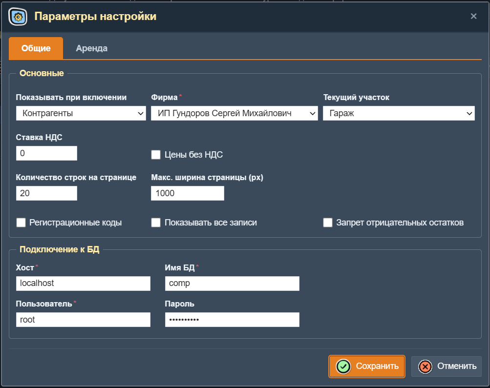
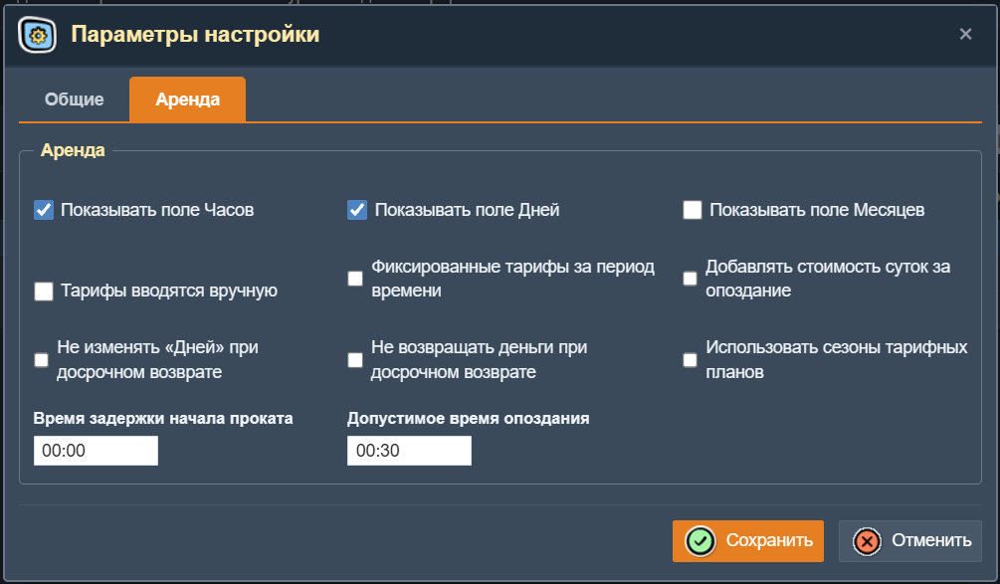
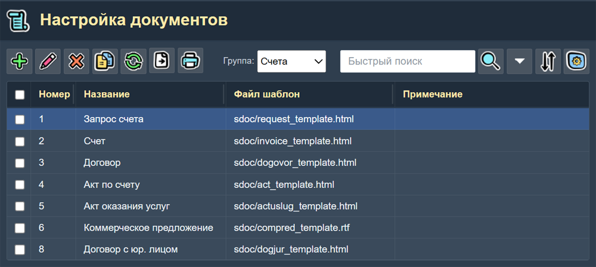
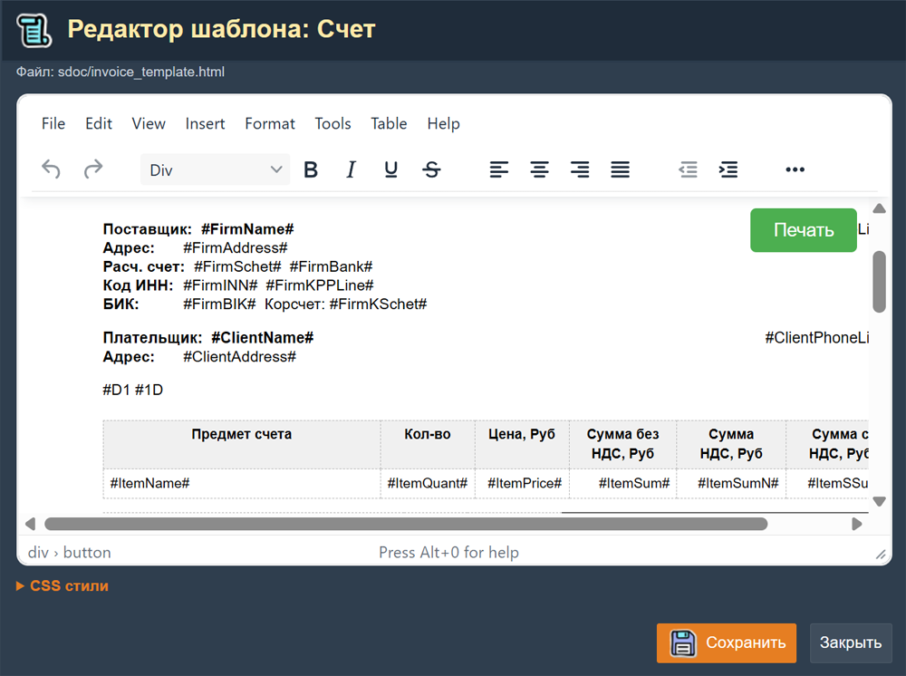
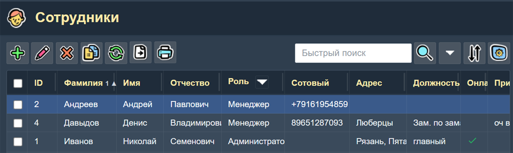
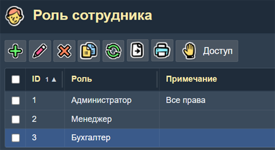
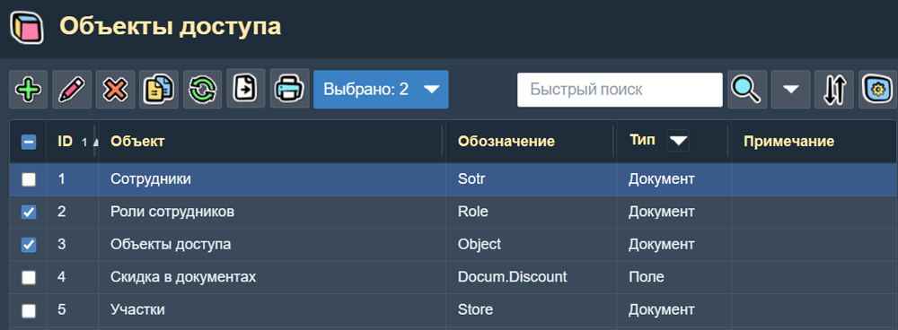
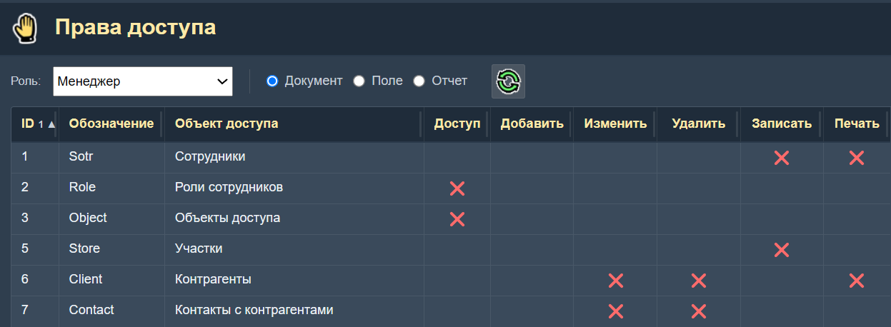

Администрирование
Раздел Администрирование содержит страницы для настройки приложения и управления пользователями. Доступ к большинству страниц этого раздела имеют только сотрудники с ролью администратора.
Страницы администрирования находятся в подменю "Администрирование"Главного меню.
Параметры настройки
Страница "Параметры настройки" открывается в виде модальной формы. Доступна через Главное меню → Администрирование → Настройка.
Эта страница имеет две вкладки: "Общие" и "Аренда". На вкладке "Общие" находятся следующие параметры настройки:

основные параметры настройки приложения:
- Показывать при включении — выбор страницы, которая будет открываться сразу после включения приложения. Варианты: Контрагенты, Товары, Счета, Продажи.
- Фирма — выбор фирмы из справочника фирм (наших организаций). Название и реквизиты этой фирмы будут использоваться в печатных документах.
- Текущий участок — выбор участка (склада) из справочника участков (мест хранения товаров). Это участок будет устанавливатся по умолчанию во всех документах, связанных с движением товаров.
- Ставка НДС — величина ставки НДС в процентах.
- Цены без НДС — признак того что цены не включают НДС.
- Количество строк на странице — максимальное количество строк, выводимых на одной странице таблицы.
- Максимальная ширина страницы — ширина страницы с таблицей в пикселях.
- Регистрационные коды — Показывать в на странице "Товар" таблицу с регистрационными кодами. Используется для цифровых товаров.
- Показывать все записи — признак, разрешающий показ "скрытых" записей о товарах и контрагентах.
- Запрет отрицательных остатков — запрет выдачи товара если на участке нет нужного количества товара.
Параметры подключения к базе данных:
- Хост — название или ИП-адрес компьютера, на котором находится база данных приложения.
- Имя БД — название базы данных.
- Пользователь — имя пользователя базы данных.
- Пароль — пароль к базе данных.
На вкладке "Аренда" страницы настройки находятся следующие параметры настройки подсистемы "Аренда":

- Показывать поле Часов — Включает видимость поля "Часов" на странице "Товар аренды". Если не включен, то количество часов аренды равно 0 и стоимость аренды за часы не вычисляется.
- Показывать поле Дней — Включает видимость поля "Дней" на странице "Товар аренды". Если не включен, то количество дней аренды равно 0 и стоимость аренды за дни не вычисляется. Количество дней не учитывается при расчете даты возврата.
- Показывать поле Месяцев — Включает видимость поля "Месяцев" на странице "Товар аренды". Если не включен, то количество часов аренды равно 0 и стоимость аренды за месяцы не вычисляется. Количество месяцев не учитывается при расчете даты возврата.
- Тарифы вводятся вручную — Если включен то на странице "Товар аренды" становятся доступными для редактирования поля тарифов "За час", "За день" и "За месяц". Отключается алгоритм расчета тарифов в зависимости от времени аренды.
- Фиксированные тарифы за период времени — Если включен, то тарифы с фагом "Фиксированный" в списке тарифов товара становятся основными и используются при выборе тарифа в зависимости от времени аренды. Иначе в зависимости от времени аренды выбираются обычные (не фиксированные) тарифы.
- Не возвращать деньги при досрочном возврате — Если включен, то стоимость аренды не изменяется (не пересчитывается) при досрочном возврате.
- Не изменять "Дней" при досрочном возврате — Если включен, то количество "Дней" не изменяется при досрочном возврате.
- Добавлять стоимость суток за опоздание — Если включен, то при опоздании более чем на "Допустимое время опоздания" к стоимости аренды добавляется стоимость дополнительных суток.
- Использовать сезоны тарифных планов — Если включен, то "Тарифный план" (и следовательно тарифы) выбирается автоматически в зависимости от сезона. Сезон задается датой начала и датой окончания сезона на странице "Тарифный план".
- Время задержки начала проката — Бесплатное время, которое автоматически добавляется к текущему времени оформления аренды.
- Допустимое время опоздания — Если возврат сделан с превышением этого времени, то к стоимости аренды добавляется дополнительная сумма.
Настройка печатных документов
Страница предназначена для управления шаблонами печатных документов. Доступна через Главное меню → Администрирование → Настройка документов.

Таблица настройки печатных документов.
В верхней части этой страницы имеется поле выбора "Группа" для выбора группы печатных документов: "Счета", "Документы", "Товары". В самой таблице показывается список печатных документов выбранной Группы.
Колонки таблицы:
- Номер — порядковый номер записи.
- Название — название печатного документа, отображаемое в меню печати.
- Файл шаблон — путь к файлу шаблона документа в формате
.html. - Примечание — произвольное примечание о печатном документе.
Поля формы
Форма содержит следующие поля: выбор типа документа из раскрывающегося списка, наименование шаблона, имя файла (с путём относительно каталога шаблонов) и порядок сортировки. Шаблоны хранятся в директории repmenu.
- Номер — порядковый номер записи.
- Группа — выбор группы документов: "Счета", "Документы", "Товары"...
- Название — название печатного документа, отображаемое в меню печати.
- Файл шаблон — имя файла шаблона документа с относительным путем к нему.
- Примечание — произвольное примечание о печатном документе.
При нажатии кнопки Печать в таблицах "Счета", "Товары", "Документы"... появляется меню из названий документов, настроенных для данного вида документа. Можно создать несколько разных шаблонов для одного вида документа (например, накладная и счёт-фактура).
Имена файлов шаблонов в таблице "Настройка документов" являются сылками. Если кликнуть по такой ссылке то файл шаблон открывается для редактирования на странице "Редактор шаблона". При помощи этого редактора вы можете самостоятельно отредактировать вид и содержание любого шаблона печатного документа.

"Редактор шаблонов печатных документов.
В тексте файла шаблона имеются конструкции типа: #Number#, #Date#, #FirmName#... Это условные обозначения переменных данных, которые при формировании печатного документа будут заменены их конкретными значениями из базы данных. Эти обозначения нельзя редактировать и придумывать новые. Весь остальной текст шаблона документа можно изменять как угодно. Также можно изменять оформление, добавлять изображения, таблицы и т.п.
В нижней части страницы Редактора шаблонов есть ссылка "CSS стили". Она открывает поле редактирования раздела CSS-стилей страницы. Этот раздел тоже можно редактировать. Правда для этого нужно разбираться в CSS и HTML, так как файл-шаблон является html-файлом.
Сотрудники
Страница "Сотрудники" содержит список сотрудников, имеющих доступ к приложению. Доступна через Главное меню → Справочники → Сотрудники.

Страница справочника «Сотрудники».
Колонки таблицы
- Фамилия, Имя, Отрество — ФИО сотрудника.
- Роль — роль сотрудника (выбор из справочника ролей).
- Телефон — контактный номер сотового телефона.
- Адрес — адрес сотрудника.
- Должность — должность сотрудника.
- Онлайн — отметка, работает ли сотрудник с приложением в данный момент.
- Примечание — произвольное примечание.
Поля формы "Сотрудник":
- Фамилия, Имя, Отрество — поля для ФИО сотрудника.
- Сотовый телефон — контактный номер сотового телефона.
- Телефон — номер другого телефона сотрудника.
- Роль — роль сотрудника (выбор из справочника ролей).
- Email — адрес электронной почты.
- Адрес — адрес сотрудника.
- Должность — должность сотрудника.
- ИНН — ИНН сотрудника.
- Логин — логин сотрудника для входа в приложение.
- Пароль — пароль для входа в приложение.
- Примечание — произвольное примечание.
Роль сотрудника определяет, какие страницы и операции ему доступны. Администратор может настроить права для каждой роли на странице Права доступа.
Роли сотрудников
Эта страница содержит перечень ролей сотрудников, используемых в системе. Доступна через Главное меню → Администрирование → Роли сотрудников. Роль определяет набор прав доступа сотрудника.

Таблица справочника «Роли сотрудников».
Колонки таблицы
- ID — уникальный код записи о роли.
- Роль — название роли (например: «Администратор», «Менеджер», «Бухгалтер», «Кладовщик»).
- Примечание — примечание о роли.
В верхней части страницы "Роли сотрудников" имеется кнопка Доступ, открывающая страницу настройки прав доступа для выбранной роли.
Объекты доступа
Страница содержит перечень объектов приложения, для которых можно настроить права доступа. Доступна через Главное меню → Администрирование → Объекты доступа.

Таблица справочника «Объекты доступа».
Колонки таблицы
- Обозначение — внутреннее системное обозначение.
- Объект — название, отображаемое в интерфейсе (например: «Склад», «Номенклатура», «Сотрудники»).
- Тип — категория объекта: документ, поле или отчёт.
- Примечание — произвольное примечание.
У этой таблицы есть "колоночный фильтр" по "Типу", что позволяет быстро получить список объектов нужного типа.
Объекты доступа предварительно настроены в системе и редко требуют изменений. Добавление нового объекта может потребоваться только при расширении функциональности приложения.
Права доступа
Страница "Права доступа" не является стандартной таблицей. Она отображает матрицу прав доступа, в которой строки соответствуют объектам доступа, а столбцы — флагам операций. Страница открывается через Главное меню → Администрирование → Права доступа.

Страница настройки прав доступа: строки — объекты, столбцы — флаги запрета операций.
Структура страницы "Права доступа"
- Выбор роли — раскрывающийся список в верхней части страницы для выбора роли, права которой настраиваются.
- Фильтр по типу — позволяет отфильтровать отображаемые объекты по категории (документы, поля, отчёты).
- Таблица-матрица — строки таблицы соответствуют объектам доступа, столбцы — операциям: Доступ, Добавить, Изменить, Удалить, Записать, Печать.
Каждая ячейка таблицы представляет собой переключатель (флаг). По умолчанию все флаги сняты, что означает разрешение на выполнение всех операции. Чтобы запретить операцию, нужно щёлкнуть по ячейке — в ней появится красный значок X, сигнализирующий о запрете этой операции.
Таким образом, управление правами строится по принципу «запрет явно»: доступ разрешён, пока не установлен соответствующий флаг запрета.
Флаги операций
- Доступ — запрещает доступ к странице объекта (страница не открывается).
- Добавить — запрещает создание новых записей.
- Изменить — запрещает редактирование существующих записей.
- Удалить — запрещает удаление записей.
- Записать — запрещает сохранение изменений (кнопка «Сохранить» в формах становится неактивной).
- Печать — запрещает печать и экспорт данных.
ВНИМАНИЕ! В справочнике "Сотрудники" должен быть хотя бы один сотрудник с правами "Администратор". Для роли "Администратор" не нужно включать запреты на "Объекты доступа" и "Роли". Иначе будет потерян контоль над доступом к приложению. Также нельзя удалять всех сотрудников. В приложение можно войти только введя логин и пароль сотрудника.